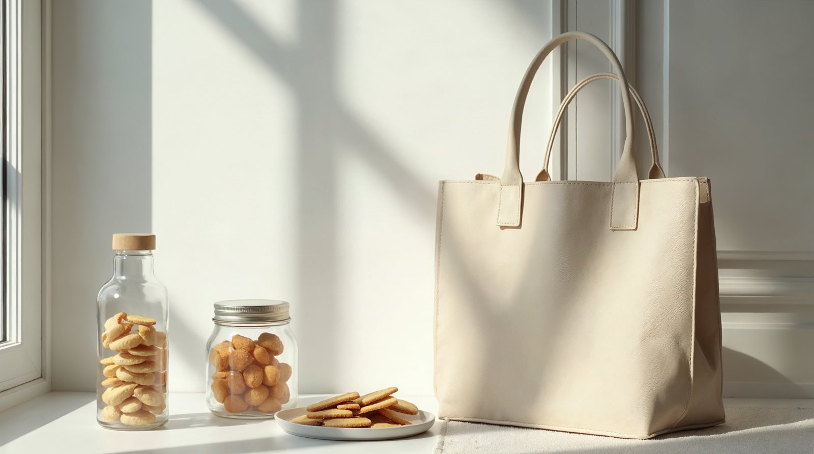
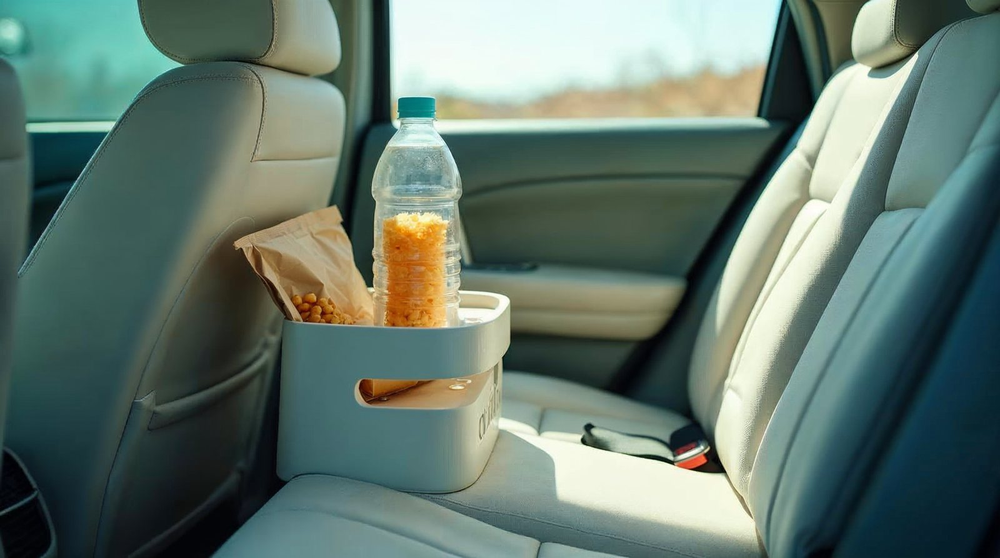

이종호 한의사 감수좋은꿈참사랑한의원 대표원장 (한의사 면허번호 19769)발행 2026-11-23 · 수정 2026-11-26
이 글의 차례
- 왜 이런 불편이 생길 수 있나요
- 왜 눈과 귀가 다르게 느끼면 속이 울렁거릴까요?
- 멀미와 평소 어지럼은 다른 얘기예요
- 멀미가 오기 전에 이런 신호가 먼저 와요
- 우리 아이는 어떤지 체크해 보세요
- 자리는 이렇게 골라 주세요
- 잠과 컨디션이 멀미를 좌우하기도 해요
- 배, 기차, 비행기에서는요
- 짧은 거리부터 자주 타 보는 것도 방법이에요
- 평소 소화가 약한 아이라면
- 화면 대신 차 안에서 할 수 있는 것
- 보호자분도 어릴 때 멀미를 하셨나요?
- 체험학습 가는 날 챙겨 보내면 좋은 것
- 멀미가 지나간 뒤에도 살펴 주세요
- 먼저 이렇게 여쭙니다
- 일상에서 먼저 해 볼 수 있는 것
- 먹는 건 이렇게 챙겨 주세요
- 차 안 공기와 냄새도 중요해요
- 운전하는 방식도 영향을 줘요
- 마음도 멀미를 키워요
- 긴 이동을 앞두고 있다면
- 토했을 때는 이렇게 해 주세요
- 보호자분께 부탁드릴 건 딱 하나예요
- 한의원에서 함께 살필 수 있는 경우
- 처음 오시면 어떤 순서로 보나요?
- 이렇게 기록해 오시면 상담이 쉬워집니다
- 이런 증상은 먼저 확인이 필요합니다
아이가 차만 타면 멀미를 하는 것은 눈으로 보는 움직임과 귀 안쪽이 느끼는 흔들림이 서로 맞지 않을 때 생기는 경우가 많아, 앉는 자리와 시선, 출발 전 식사, 차 안 공기를 먼저 살피고 이동 전에 미리 준비합니다.
할머니 댁에 가는 길이나 체험학습 버스에서 아이가 창백해지며 토할 것 같다고 하면 부모님도 긴장하게 되고, 명절 귀성길이 다가오면 자주 듣는 고민입니다.
진료실에서 보호자분들이 이렇게 말씀하세요. "원장님, 차에 타고 십 분만 지나면 얼굴이 하얘져요. 우리 애만 이런가요?" 아니에요. 아이들 멀미는 아주 흔해요. 원래 그래요. 몸이 흔들림을 알아차리는 감각이 예민하게 자라는 시기라서 그런 경우가 많거든요.
그리고 많은 아이들이 크면서 멀미가 덜해져요. 그러니 지금은 아이가 덜 힘들게 이동하는 방법을 찾는 게 먼저예요. 차를 피할 수는 없으니까, 차를 잘 타는 방법을 같이 만들어 가는 거죠.
왜 이런 불편이 생길 수 있나요
- 차 안에서 책이나 화면을 보면 눈은 멈춰 있는데 몸은 흔들려 어지럼이 커집니다.
- 기름진 음식으로 배가 부르거나 빈속이면 메스꺼움이 더 쉽게 옵니다.
- 환기가 안 되는 더운 차 안, 강한 방향제 냄새도 멀미를 부추깁니다.
- 한의학에서는 아이의 소화와 예민함, 평소 어지럼도 함께 살핍니다.
- 전날 잠을 설쳤거나 피곤한 날 멀미가 더 쉽게 온다는 아이도 있습니다.
왜 눈과 귀가 다르게 느끼면 속이 울렁거릴까요?
왜인 줄 아세요? 우리 몸에는 흔들림을 알려 주는 보고자가 둘 있어요. 하나는 눈이고, 하나는 귀 안쪽의 균형 감각이에요. 평소에는 이 둘이 같은 말을 하니까 몸이 편해요.
그런데 차 안에서 휴대폰을 보면 눈은 "가만히 있어"라고 하고, 귀는 "흔들리고 있어"라고 해요. 두 보고가 서로 다르니 머리가 헷갈리는 거죠. 그 헷갈림이 메스꺼움과 어지럼, 식은땀으로 나타나는 경우가 많아요.
그래서 창밖 먼 곳을 보라고 하는 거예요. 눈으로도 움직임을 보면 두 보고자가 다시 같은 말을 하게 되거든요. 그러니까 사실은 멀미를 참는 게 아니라, 눈과 귀의 말을 맞춰 주는 게 핵심이에요.
멀미와 평소 어지럼은 다른 얘기예요
저는 이걸 꼭 둘로 나눠서 여쭤요. 차나 배를 탈 때만 울렁거리고 내리면 금방 괜찮아지는 멀미가 있고, 차를 타지 않을 때도 어지럽거나 머리가 아픈 경우가 있어요.
앞의 것은 이동 환경을 바꾸고 미리 준비하는 것만으로도 덜해지는 아이가 많아요. 뒤의 것은 멀미로만 보지 말고 아래 '먼저 확인' 항목에 해당하는지 먼저 봐 주셔야 해요. 두 개가 아주 다른 얘기거든요.
멀미가 오기 전에 이런 신호가 먼저 와요
- 하품을 자주 하고 말수가 갑자기 줄어든다
- 얼굴이 하얘지고 입술 색이 옅어진다
- 침을 자꾸 삼키거나 침이 많이 고인다고 한다
- 이마나 손에 식은땀이 난다
- 창문을 열어 달라거나 덥다고 한다
이런 신호가 보이면 토하기 전 단계인 경우가 많아요. 이때 바로 화면을 내려놓게 하고, 창문을 열고, 가능하면 안전한 곳에 잠깐 세워 바깥 공기를 쐬게 해 주세요. 신호를 일찍 잡을수록 아이가 덜 힘들어요.
우리 아이는 어떤지 체크해 보세요
- 차에 탄 지 30분 안에 울렁거린다고 한다
- 차 안에서 휴대폰, 태블릿, 책을 자주 본다
- 출발 직전에 배부르게 먹거나 아예 굶고 탄다
- 평소에도 잘 체하거나 소화가 약한 편이다
- 냄새에 예민해 차 안 방향제나 음식 냄새를 싫어한다
- 피곤하거나 잠이 부족한 날 멀미가 더 심하다
해당하는 항목이 바로 손댈 곳이에요. 하나씩 바꿔 보면서 어떤 게 우리 아이에게 맞는지 찾아가면 돼요.
자리는 이렇게 골라 주세요
승용차라면 뒷좌석 가운데처럼 앞 유리 너머가 보이는 자리가 도움이 되는 아이가 있어요. 옆 창문으로 휙휙 지나가는 풍경보다 앞쪽 먼 곳이 보이는 게 눈과 귀의 말을 맞추기 쉽거든요. 물론 카시트와 안전띠는 아이 나이에 맞게 꼭 해 주세요.
버스는 바퀴 위나 뒤쪽보다 앞쪽 자리가 덜 흔들려요. 진행 방향을 보고 앉게 하고, 머리를 등받이에 기대게 하면 머리가 덜 흔들려서 편해하는 아이가 많아요.
잠과 컨디션이 멀미를 좌우하기도 해요
여행 전날 설레서 늦게 자는 아이가 많죠. 그런데 잠이 모자란 날은 같은 길에서도 멀미가 더 쉽게 와요. 이동 전날만큼은 평소보다 조금 일찍 재워 주세요.
감기 기운이 있거나 코가 막혀 있을 때, 배탈이 난 뒤에도 멀미가 심해지는 아이가 있어요. 컨디션이 안 좋은 날 긴 이동이 잡혀 있다면, 쉬는 횟수를 평소보다 늘려 주시면 좋아요.
배, 기차, 비행기에서는요
배는 흔들림이 크고 길어서 차보다 멀미가 심한 아이가 많아요. 가능하면 갑판처럼 바깥 공기가 통하는 곳에서 수평선을 보게 해 주세요. 선실 안에서 화면을 보는 건 가장 힘든 조합이에요.
기차와 지하철은 진행 방향을 보고 앉는 게 좋아요. 뒤로 가는 자리에 앉으면 눈으로 보는 움직임이 거꾸로라 더 울렁거린다는 아이가 있거든요. 비행기는 날개 근처 자리가 덜 흔들리는 편이에요.
짧은 거리부터 자주 타 보는 것도 방법이에요
멀미가 무서워 차를 아예 피하면, 다음에 긴 이동이 생겼을 때 더 긴장하게 돼요. 집 근처 짧은 거리부터 편한 컨디션으로 자주 타 보면서 "괜찮았다"는 경험을 쌓는 게 도움이 되는 아이가 있어요.
최대한 천천히, 아이가 괜찮다고 할 만큼만 늘려 가면 돼요. 괜찮았던 날은 꼭 "오늘 잘 탔네" 하고 알아봐 주세요. 그 한마디가 다음 이동의 긴장을 덜어 주거든요.
평소 소화가 약한 아이라면
평소에 잘 체하고, 밥을 조금만 먹어도 배부르다고 하고, 배가 자주 아프다는 아이는 멀미도 잦은 경우가 많아요. 속이 예민한 아이는 흔들림에도 속이 먼저 반응하는 거예요.
이런 아이는 평소 식사를 천천히, 꼭꼭 씹어 먹게 하고, 찬 음료나 기름진 간식을 자주 먹지 않게만 해 주세요. 평소 속이 편해야 차 안에서도 덜 힘들어하는 경우가 많아요.
화면 대신 차 안에서 할 수 있는 것
화면을 끄라고만 하면 아이는 금방 심심해해요. 그래서 대신할 걸 미리 준비해 두시면 좋아요. 창밖에서 빨간 차 세기, 간판 글자로 끝말잇기, 노래 따라 부르기처럼 고개를 숙이지 않고 할 수 있는 놀이요.
오디오북이나 좋아하는 노래를 틀어 주는 것도 방법이에요. 귀로 듣는 건 눈과 귀의 말을 어긋나게 하지 않아서, 화면을 보는 것보다 훨씬 편해하는 아이가 많거든요.
보호자분도 어릴 때 멀미를 하셨나요?
어릴 때 멀미가 심했던 보호자분의 아이가 멀미를 잘하는 경우가 종종 있어요. 체질이 닮는 부분이 있는 거죠. 보호자분이 어릴 때 어떻게 지나왔는지 기억나시면 알려 주세요. 참고가 많이 돼요.
그리고 아이에게도 "엄마(아빠)도 어릴 때 차 타면 힘들었어" 하고 말해 주세요. 자기만 이상한 게 아니라는 걸 알면 아이가 훨씬 편해해요.
체험학습 가는 날 챙겨 보내면 좋은 것
- 비닐봉투 두어 장과 물티슈
- 작은 물병
- 담백한 과자 몇 조각
- 벗고 입기 쉬운 겉옷
아이 가방 앞주머니처럼 바로 꺼낼 수 있는 곳에 넣어 주세요. 준비물이 있다는 것만으로도 아이가 덜 긴장하는 경우가 많아요.
멀미가 지나간 뒤에도 살펴 주세요
멀미는 차에서 내리면 금방 가라앉는 아이도 있고, 도착하고 나서도 한참 기운 없이 누워 있는 아이도 있어요. 회복하는 데 걸리는 시간도 아이마다 달라요. 원래 그래요.
도착한 뒤에는 바로 뛰어놀게 하기보다 바깥 공기를 쐬며 잠깐 쉬게 해 주세요. 회복이 유난히 오래 걸리거나 그날 저녁까지 밥을 못 먹는다면, 그 내용도 기록해 두셨다가 오실 때 알려 주세요.

먼저 이렇게 여쭙니다
- 차에 탄 지 얼마 만에 멀미를 하나요?
- 차 안에서 휴대폰이나 책을 보나요?
- 출발 전에 무엇을, 얼마나 먹나요?
- 버스, 지하철, 배에서도 멀미를 하나요?
- 멀미를 한 뒤 회복하는 데 얼마나 걸리나요?
일상에서 먼저 해 볼 수 있는 것
- 버스는 앞쪽 창가, 승용차는 뒷좌석에 앉혀 창밖 먼 곳을 보게 하기(어린이는 앞좌석에 앉히지 않고 나이에 맞는 카시트·안전띠)
- 차 안에서 화면이나 책 보지 않기
- 출발 1시간 전 가볍게 먹고 기름진 음식 피하기
- 창문을 조금 열어 신선한 공기 들이기
- 긴 이동에는 1시간쯤마다 쉬면서 바깥 공기 쐬기
먹는 건 이렇게 챙겨 주세요
빈속도, 배부른 것도 멀미를 부르기 쉬워요. 출발 전에는 밥이나 빵 같은 담백한 음식을 평소보다 조금 적게 먹이세요. 튀김, 라면, 기름진 고기처럼 소화가 오래 걸리는 음식은 이동하는 날만큼은 피하는 게 좋아요.
차 안에서는 탄산음료나 우유보다 물을 조금씩 마시게 하세요. 긴 이동이라면 담백한 과자를 몇 조각 챙겨 두었다가 배가 허전할 때 조금씩 주는 정도가 좋아요.
차 안 공기와 냄새도 중요해요
냄새에 예민한 아이는 방향제 하나로도 울렁거림이 시작될 수 있어요. 이동하는 날은 방향제를 떼어 두고, 차 안에서 냄새가 강한 음식을 먹지 않는 게 좋아요.
히터를 세게 틀어 차 안이 덥고 답답하면 멀미가 더 쉽게 와요. 겨울에도 창문을 조금 열어 바람이 통하게 하고, 아이 옷은 벗기 쉬운 걸로 입혀 주세요.
운전하는 방식도 영향을 줘요
급출발, 급정거, 잦은 차선 변경은 어른도 울렁거리게 해요. 아이와 함께 탈 때는 조금 더 부드럽게 출발하고 멈춰 주세요. 굽은 산길이나 막히는 도심에서 아이가 더 힘들어한다면 길을 바꿔 보는 것도 방법이에요.
마음도 멀미를 키워요
한 번 크게 토한 아이는 차에 타기 전부터 "또 토하면 어떡하지" 하고 긴장해요. 그 긴장이 속을 더 예민하게 만들기도 하고요. 그래서 "토해도 괜찮아, 봉투 여기 있어" 하고 미리 말해 주는 게 생각보다 큰 도움이 돼요.
봉투와 물티슈, 갈아입을 옷을 아이가 보는 앞에서 챙겨 두세요. 준비가 되어 있다는 걸 알면 아이도 마음을 놓아요. 멀미했다고 혼내거나 한숨을 쉬면 아이는 다음 이동이 더 무서워져요.
긴 이동을 앞두고 있다면
명절 귀성길처럼 오래 타야 한다면, 아이가 평소 잠드는 시간에 맞춰 출발하는 방법이 있어요. 잠들어 있는 동안에는 멀미를 덜 느끼는 아이가 많거든요. 대신 전날 밤에는 충분히 재워 주세요.
쉬어 갈 곳을 미리 정해 두고, 1시간쯤마다 내려서 바깥 공기를 쐬고 조금 걷게 해 주세요. 체험학습 버스라면 담임 선생님께 앞자리에 앉혀 달라고 미리 부탁드려 보세요.
토했을 때는 이렇게 해 주세요
먼저 차를 안전한 곳에 세우고 아이를 바깥 공기 있는 곳으로 데려가 주세요. 물로 입을 헹구게 하고, 옷이 젖었으면 갈아입혀 주세요. 등을 쓸어 주며 "괜찮아" 해 주시면 아이도 빨리 진정해요.
속이 가라앉을 때까지는 억지로 먹이지 마세요. 조금 뒤 아이가 원하면 물부터 한두 모금씩 주고, 괜찮으면 담백한 것을 조금씩 주시면 돼요.
보호자분께 부탁드릴 건 딱 하나예요
위에 여러 가지를 적었지만 다 챙기시려면 힘들어요. 그래서 저는 하나만 부탁드려요. 차 안에서는 화면을 끄고 창밖 먼 곳을 보게 해 주세요.
이것만 지켜 주시고 딴 건 편하게 하셔도 돼요. 아이 몸을 살피는 건 제가 맡을게요. 창밖에서 산이나 건물 이름 맞히기 놀이를 하면 아이도 지루해하지 않고 먼 곳을 보게 돼요.

한의원에서 함께 살필 수 있는 경우
- 멀미가 심해 외출을 꺼리는 아이의 경우 소화와 몸의 예민함을 함께 살핍니다.
- 평소 어지럼이나 두통이 잦은 경우 함께 여쭙니다.
- 이동 전에 미리 준비할 수 있는 방법을 함께 정리합니다.
좋은꿈참사랑한의원에서는 아이의 맥을 먼저 짚고, 멀미가 생기는 상황과 아이의 평소 소화를 보호자에게 들은 뒤 필요하다고 판단될 때 복진 같은 방법을 더해 아이의 몸 상태를 살핀 뒤 아이의 나이와 상태에 맞는 방법을 함께 정합니다. 긴 이동을 앞두고 있다면 일정을 미리 알려 주세요.
처음 오시면 어떤 순서로 보나요?
처음 오시면 저는 아이 맥부터 짚어요. 모든 분께 그렇게 하거든요. 보호자분과 함께 들어오시면 되고, 아이가 긴장하면 잠깐 이야기를 나누며 편해진 다음에 짚어요.
그다음 멀미가 어떤 상황에서 오는지 보호자분과 아이에게 함께 여쭤요. 한의학에서는 멀미가 잦은 아이를 볼 때 평소 잘 체하는지, 입이 짧은지, 냄새나 소리에 예민한지도 같이 봐요. 소화와 예민함이 멀미와 함께 움직이는 경우가 많거든요.
한약이 필요하다고 판단되면 그때 상담하고, 먹고 있는 약이나 영양제가 있으면 먼저 확인해요. 먹는 중에 불편해 보이면 복용을 멈추고 연락 주세요. 다시 오시면 지난 이동 때 어땠는지부터 이어서 여쭤요.

이렇게 기록해 오시면 상담이 쉬워집니다
- 멀미를 한 날의 이동 수단과 이동 시간
- 출발 전에 먹은 음식과 시간
- 차 안에서 한 일(화면 보기, 잠자기 등)
- 차를 타지 않을 때도 어지럽거나 머리가 아픈지
멀미를 안 한 날도 같이 적어 주세요. 같은 길을 갔는데 어떤 날은 괜찮았다면, 그날 무엇이 달랐는지가 가장 좋은 힌트가 되거든요. 앉은 자리, 먹은 것, 잠든 시간만 비교해도 많이 보여요.
긴 여행 계획이 있다면 날짜와 이동 수단을 함께 적어 주세요. 남은 기간에 맞춰 무엇부터 준비할지 같이 순서를 잡을 수 있어요.
궁금한 건 편하게 물어보세요. 다음 이동이 조금 덜 힘들 수 있게 오시면 같이 준비해 볼게요.
이런 증상은 먼저 확인이 필요합니다
- 차를 타지 않았는데도 어지럼과 구토가 반복되는 경우
- 두통과 함께 토하고 아침에 더 심한 경우
이런 신호가 있으면 한의원보다 가까운 병원이나 응급실을 먼저 찾으세요.

여쭙는 것
- 차에 탄 지 얼마 만에 멀미를 하나요?
- 차 안에서 휴대폰이나 책을 보나요?
- 출발 전에 무엇을, 얼마나 먹나요?
생활에서 해 볼 것
- 버스는 앞쪽 창가, 승용차는 뒷좌석에 앉혀 창밖 먼 곳을 보게 하기(어린이는 앞좌석…
- 차 안에서 화면이나 책 보지 않기
- 출발 1시간 전 가볍게 먹고 기름진 음식 피하기
한의원에서 함께 살필 것
- 멀미가 심해 외출을 꺼리는 아이의 경우 소화와 몸의 예민함을 함께 살핍니다.
- 평소 어지럼이나 두통이 잦은 경우 함께 여쭙니다.
- 이동 전에 미리 준비할 수 있는 방법을 함께 정리합니다.
먼저 확인이 필요한 신호
- 차를 타지 않았는데도 어지럼과 구토가 반복되는 경우
- 두통과 함께 토하고 아침에 더 심한 경우
한눈에 보는 표
| 구분 | 핵심 |
|---|---|
| 여쭙는 것 | 차에 탄 지 얼마 만에 멀미를 하나요? 차 안에서 휴대폰이나 책을 보나요? |
| 생활에서 해 볼 것 | 버스는 앞쪽 창가, 승용차는 뒷좌석에 앉혀 창밖 먼 곳을 보게 하기(어린이는 앞좌석에 앉히지 않고 나이에 맞는 카시트·안전띠) 차 안에서 화면이나 책 보지 않기 |
| 한의원에서 함께 살필 것 | 멀미가 심해 외출을 꺼리는 아이의 경우 소화와 몸의 예민함을 함께 살핍니다. 평소 어지럼이나 두통이 잦은 경우 함께 여쭙니다. |
| 먼저 확인이 필요한 신호 | 차를 타지 않았는데도 어지럼과 구토가 반복되는 경우 두통과 함께 토하고 아침에 더 심한 경우 |
자주 묻는 질문
멀미약을 먹여도 되나요?
나이에 따라 쓸 수 있는 약이 다르니 약사나 소아청소년과와 상의하세요.
크면 나아지나요?
나이가 들며 덜해지는 아이가 많습니다. 그 전까지는 이동 환경을 바꿔 주는 것이 도움이 됩니다.
기차나 지하철에서도 멀미를 하는데 괜찮나요?
진행 방향을 보고 앉고 창밖 먼 곳을 보게 하면 덜한 경우가 많습니다. 차를 타지 않아도 어지럽다면 진료를 받으세요.
멀미할 때 무엇을 먹이면 좋나요?
메스꺼울 때는 억지로 먹이지 말고, 가라앉은 뒤 물이나 담백한 음식을 조금씩 주세요.
차에서 재우면 덜할까요?
잠든 동안에는 멀미를 덜 느끼는 아이가 많아, 긴 이동은 아이가 잘 시간에 맞춰 출발하는 방법도 있어요.
좋은꿈참사랑한의원은 재진 때 지난번 이야기부터 이어서 여쭙니다. 진료시간과 예약은 오시는 길에서 확인하세요.
어디서 상담받을 수 있나요?
좋은꿈참사랑한의원은 서울 동작구 만양로2길 2 신성빌딩 3층·5층(서울 동작구 상도동, 7호선 상도역 3번 출구 근처)에 있습니다. 한의사 3명(이종호 대표원장, 조영기 수석진료원장, 정원영 진료원장)이 진료합니다. 진료시간은 평일 09:30~20:00(점심 13:00~14:00), 토·일·공휴일 09:30~15:00이며, 방문 전 전화로 확인을 권합니다. 예약은 네이버 예약, 카카오톡 상담, 전화 02-815-7510로 받습니다.
이 글은 일반적인 건강 정보이며 개인의 진단이나 치료를 대신하지 않습니다. 증상이 있거나 복용 중인 약이 있다면 진료를 통해 확인하세요. 치료 효과는 개인마다 다를 수 있습니다.
작성 기준: 일반적으로 알려져 있는 건강 정보를 참고해 정리했습니다(대표원장 감수). 증상 기록은 1~2주 동안 하루 1회, 비슷한 시간에 적어 오시면 지난 상태와 비교하기 쉽습니다.